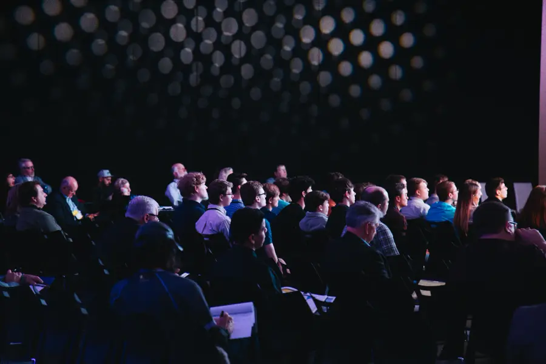
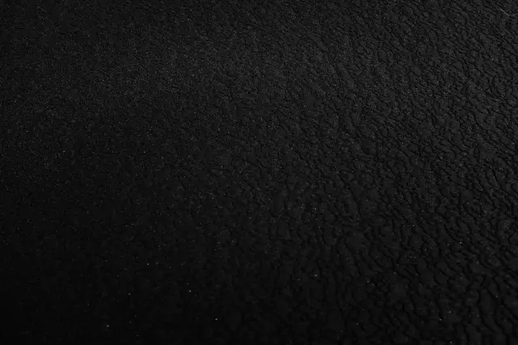

Mug Library
Forty shapes, each named after a regular.
Ceramic Shop Owner · Portfolio
Wheel-thrown mugs with honest glaze pools and a kiln that runs on Tuesdays.

About
Wheel-thrown mugs with honest glaze pools and a kiln that runs on Tuesdays.
Everything on this page is made to be scrolled slowly. The work below is the honest list — outcomes attached, fluff removed.
Currently
Focus — Wheel throwing
Also — Glaze chemistry
Based — Cape Town
Selected work
Forty shapes, each named after a regular.

Three hundred test tiles, twelve keepers.

Six local potters on consignment.
A waitlisted beginner wheel course.
Monthly unboxings streamed live.
Custom dinnerware for four restaurants.
Services
Wheel-thrown mugs with honest glaze pools and a kiln that runs on Tuesdays. Wheel throwing is where this shows up most — ask for examples on a call.
Wheel-thrown mugs with honest glaze pools and a kiln that runs on Tuesdays. Glaze chemistry is where this shows up most — ask for examples on a call.
Wheel-thrown mugs with honest glaze pools and a kiln that runs on Tuesdays. Kiln firing is where this shows up most — ask for examples on a call.
Wheel-thrown mugs with honest glaze pools and a kiln that runs on Tuesdays. Consignment curation is where this shows up most — ask for examples on a call.
Wheel-thrown mugs with honest glaze pools and a kiln that runs on Tuesdays. Workshops is where this shows up most — ask for examples on a call.
Wheel-thrown mugs with honest glaze pools and a kiln that runs on Tuesdays. Photography is where this shows up most — ask for examples on a call.
Contact